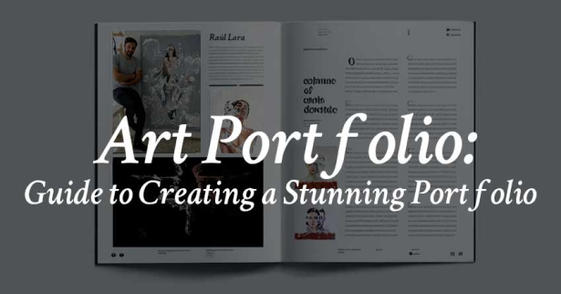

Crafting a Stunning Art Portfolio: A Comprehensive Guide
Table of Contents
introduction
high quality images
artist statement
project description
curriculum vitae (CV)
contact infromation

introduction
A well-curated art portfolio is essential for presenting your work in the best possible light.
It allows you to tell your artistic story, highlight your skills, and connect with your audience.
In this blog post, we'll cover the key elements that make up a standout art portfolio and provide practical tips for assembling one that resonates with viewers.
The Importance of a Strong Art Portfolio
A strong art portfolio is crucial for several reasons.
It helps you showcase your talent and versatility, provides a snapshot of your artistic evolution, and acts as a key tool in securing exhibitions, commissions, or job opportunities.
For more insights into why your art portfolio matters, check out this guide on the significance of a compelling portfolio.
Essential Components of an art portfolio
High-Quality Images
The visual quality of your portfolio is paramount.
Ensure that each image is high-resolution, well-lit, and accurately represents the colors and details of your work.
For tips on photographing artwork, see this article on capturing art effectively.
Artis Statment
An artist statement provides context for your work.
It should convey your creative process, themes, and influences.
Keep it concise and engaging. For examples and writing tips, visit this resource on crafting artist statements.